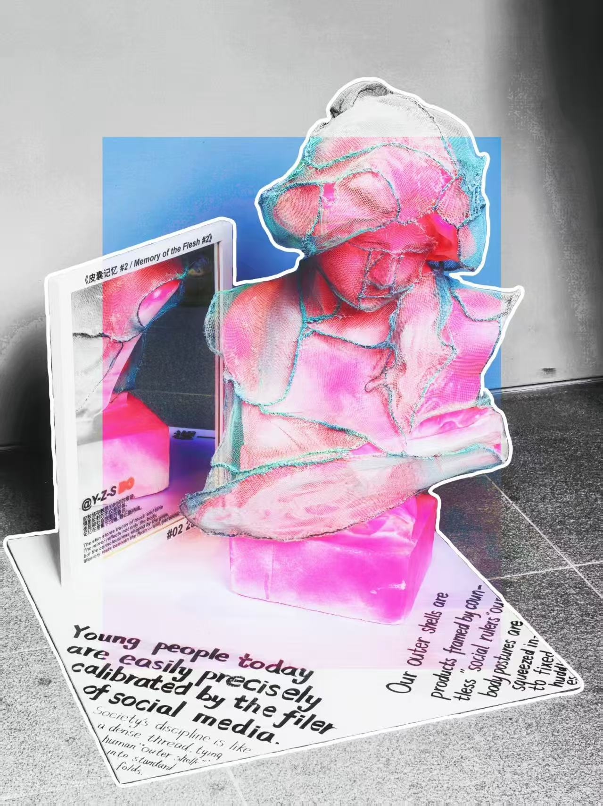

01. 作品影像记录
Visual Documentation
02. 关于我
Personal Message / 个人寄语
“我是一名热爱设计与视觉的美术生，喜欢用细腻的线条表达思考。我相信艺术的力量不在于高冷的展览，而在于生活被放大的温度。 有时候我在创作，有时候我在沉思——两者的界限其实很模糊。 如果你在寻找一个认真做梦的人，那大概就是我。”
YZS Brand / 品牌简介
我们拒绝多余的修辞，只谈存在本身。
Yet Zero Sense（YZS）是年轻灵魂的留白区，一个探索“无我”与“存在”边界的青年视觉品牌。我们在感知过剩的时代，重获零感。
Philosophy / 核心理念
我们生活在一个“过度感知”的时代。情绪被算法放大，色彩被符号化，连“真实”都被包装成消费品。
YZS 不提供答案，只提供空白。
我们设计物，也设计“无物”。让生活回到“零感”——那个一切重新开始的地方。
03. 作品展示
Selected Creative Works

《43+1》
装置艺术 / 2025

《皮下记忆》
概念艺术 / 2025

《痛》
实验艺术 / 2024